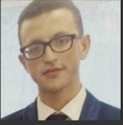

Je suis un jeune professionnel extraverti et énergique, à la recherche d'une carrière qui correspond
à mes compétences professionnelles, à ma personnalité et à mes tendances meurtrières.
- Diplôme et Formation
-
Elève ingénieure en sciences géomatiques Institut agronomique et
vétérinaire Hassan II,RABAT Institut agronomique et vétérinaire Hassan
II,RABAT Rabat,Maroc / Depuis 2020
deuxième année en cycles d'ingénieur filière topographie
Classes Préparatoires aux Grandes Ecoles D'Ingénieur. Lycée Al Charif El
Idrissi, TAZA Taza, Maroc / De 2018 à 2020
filière mathématiques/physiques :MP
Baccalauréat en Sciences mathématiques Option "B" avec mention "Très
Bien'' Lycée technique taza Taza, Maroc / 2018
- compétences
-
Computer skills
Microsoft productivity software (Word, Excel, etc), Windows,python,PostgreSQL,html,css